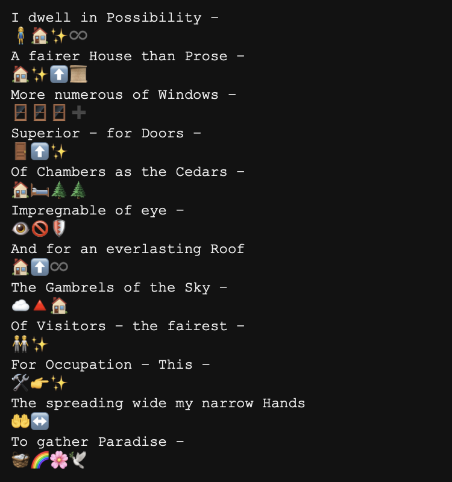
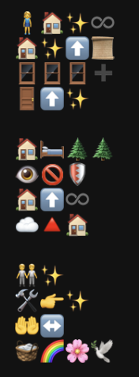
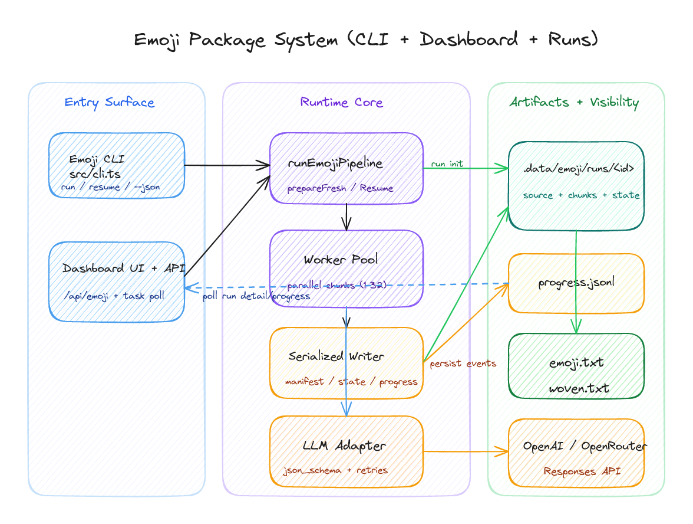
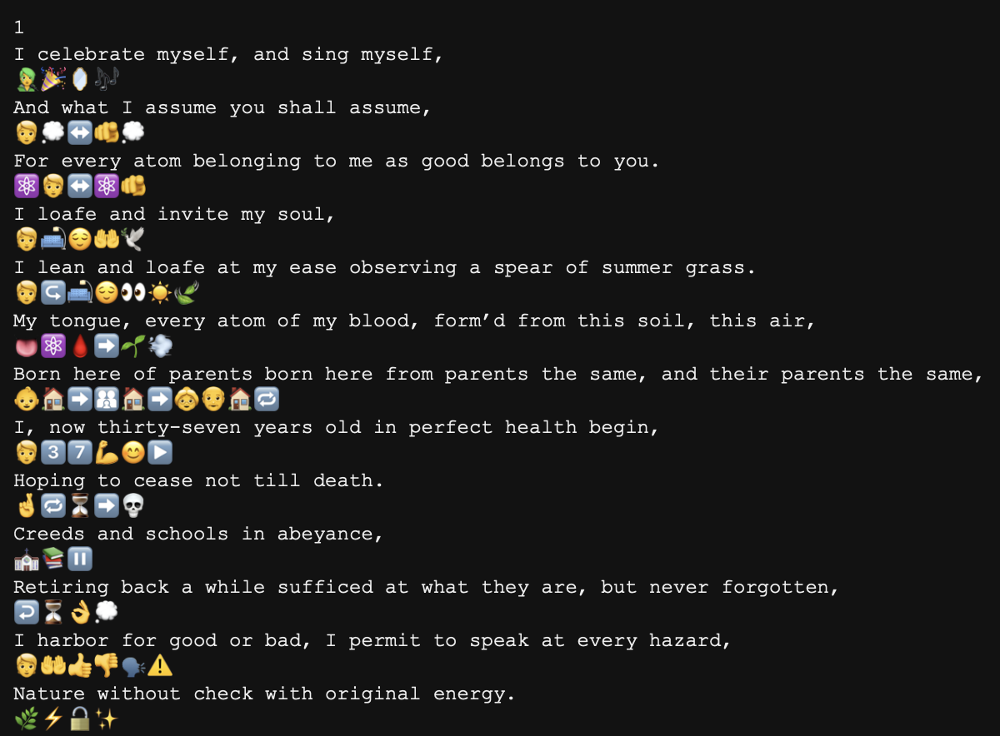
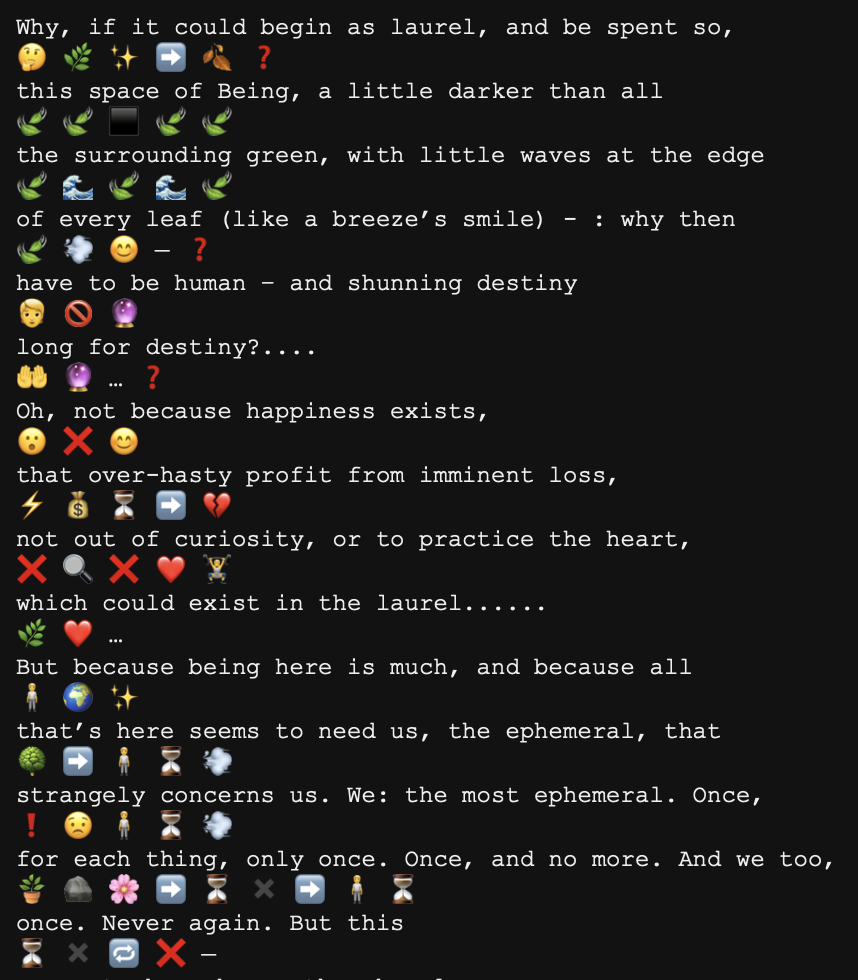
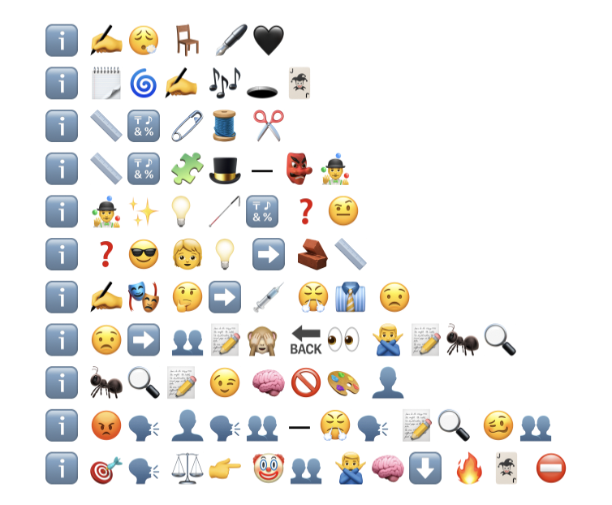
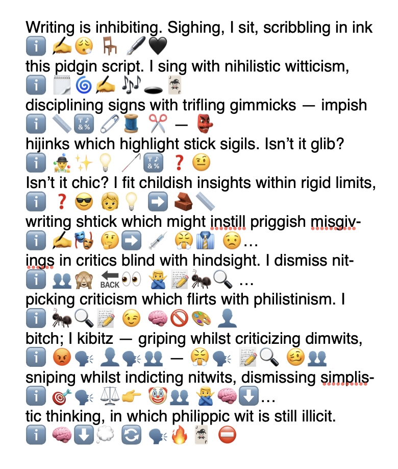

An Emoji Translator
04/03/2026
emoji llm cli poetics
A system that converts text into emoji-only lines.

I keep returning to Emoji Dick, which remains, for me, one of the stranger and more revealing works of conceptual writing. It stages translation as reduction, collaboration, expense, joke, and artifact all at once. An LLM makes it newly easy to generate adjacent objects on demand, but the old questions do not disappear. They merely return in altered form: what kind of labor is being hidden, what counts as a version, and what exactly is being translated when language is forced into pictographs?
This post is partly technical and partly speculative. I want to show the machinery because the machinery determines the kind of object that can appear. But I also want to stay with the literary question behind it, which is less obvious and more interesting: can emoji do any real poetic work, or do they only cast a bright, impoverished gloss over the line?
What began as a small CLI experiment gradually became an apparatus for testing that question at scale: resumable runs, chunk-level retries, explicit artifact contracts, and a dashboard that makes the duration and fragility of the process visible rather than magical.
What success meant here
Success here had very little to do with elegance. Before asking whether any output was good, I needed to know whether the system could keep faith with the line: survive interruption, show its progress during long calls, and produce stable final artifacts (emoji.txt and woven.txt) that could actually be inspected afterward.

The woven version is more legible, but the raw emoji.txt file matters more to me as evidence. If a line vanishes, if two lines quietly fuse, if place is lost, then whatever literary strangeness follows is resting on a false premise. The first requirement is not beauty but accountable correspondence.
The apparatus

The most important technical decision is not glamorous. State writes are serialized even while chunk conversion is parallelized. That keeps state.json, run.manifest.json, and progress.jsonl in agreement, which means a run can be resumed without turning into an archaeological problem.
How resumption is made possible

A chunk moves through a narrow sequence: claimed, attempted, written, marked. Retries remain local to that chunk. Failed work can be sent back to pending. Completed work is not touched again. This is less an achievement of intelligence than a discipline of bookkeeping, but without that discipline the literary question never really gets a fair hearing.
The contract the CLI has to keep
BASH
bun run --cwd packages/emoji src/cli.ts run -- --inputFile ./book.txt --parallelism 4 --reasoning high --maxOutputTokens 64000 --requestTimeoutMs 900000 --maxRetries 8 --retryBaseDelayMs 1500 --json trueThe provider adapter asks for a strict json_schema response with exactly one emoji line for each source line. That does not solve the problem of interpretation, but it does keep the experiment honest. Line-locking, overlap-aware stitching, and deterministic weaving are what prevent the output from dissolving into decorative drift.

Whitman is useful because the passage wants breadth, catalogue, continuation. If the system can remain lineate under that pressure, then one begins to see not literary success exactly, but a usable formal discipline.
Rilke introduces a different difficulty. The line does not simply continue; it broods, turns, and qualifies itself. The output below is still awkward, but the awkwardness is at least inspectable.

Christian Bök's Eunoia makes the limit clearer still. Its constraint is not merely lexical or imagistic; it is internal, formal, almost infrastructural at the level of the vowel. Even with extra prompting, the system does not really understand that pressure. It mostly notices the surface fact of the letter i and repeats the obvious emblem:


Conclusion
The next technical tasks are ordinary enough: better defaults, sharper comparisons, more careful prompting around formal constraints, a clearer sense of which kinds of writing this method can and cannot bear. But the more interesting question is not technical. If entire texts can be rendered this way, what sort of object results? Can emoji be literary? Can there be an emoji literature? Is such a thing sculptural, pictorial, mnemonic, comic? I do not know yet. That uncertainty is part of the appeal.